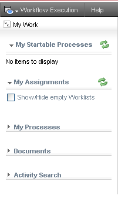

Stardust provides the facility to change and configure the Stardust Portal UI elements using the requiredRoles and excludeRoles attributes. You can control the access based on roles for the following perspectives and UI elements:
When these attributes are applied to any perspective, launch panel, menu and toolbar then these elements are either visible or not visible to that particular role. Whereas in case of Views, if any View is not accessible to the particular role then the user of that role would be able to see the link of View; but when he or she clicks on that View, the message dialog would display the No Access message.
Note that if requiredRoles and excludeRoles both the attributes are applied for one UI element then the excludeRole attribute takes precedence over requiredRoles.
To change the authorization for any UI element, you need to edit the following XML files from the respective jar file of each perspective.
Once Stardust is installed, these jar files are available under Stardust Install Folder/add-ons/ipp-portal/lib
In case you want to change the authorization for the Workflow perspective, you should edit the procesPortalUi-context.xml from the ipp-workflow-perspective.jar file. For example, the Role 1 should not have rights to view the Overview launch panel whereas the Administrator should be able to view the Overview launch panel. In this case, change the authorizations as shown:
<ippui:launchPanel name="overview" collapsible="false" include="/plugins/processportal/launchpad/overview.xhtml" requiredRoles="Administrator"/>
So the Overview launch panel is not available to the user who has rights of Role 1 as shown in the following screenshot:

Figure: UI Entitlements for Role 1
Note that only requiredRoles attribute is specified for Administrator. You do not have to specify excludeRole attribute explicitly. Once you specify list of required roles, only those roles can see the UI elements.
You can provide more than one role in a comma separated list. The access control is applicable only for UI elements. It defines the visibility of the specific element in the UI for the specific role.
Note the sequence of actions - first you need to stop the server, edit and save changes to the XML file, and update the archive. To view the changes, start the server and login to Stardust Portal. Any change to any ui-context.xml are reflected only when you restart the server. This ensures that newly modified XML file is available at runtime.